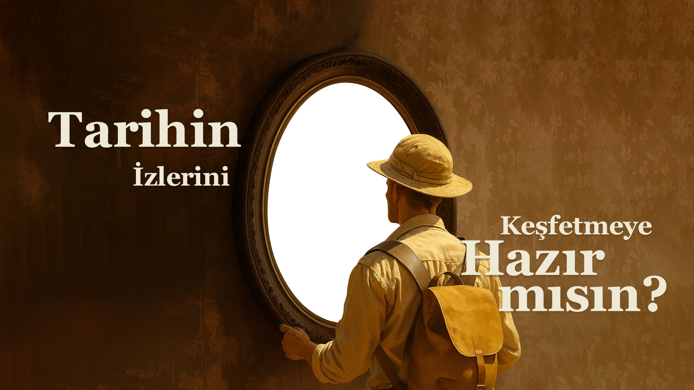

Grafik Tasarım Tarihi
Bu web sitesindeki içerikler, Grafik Tasarım Tarihi dersine yönelik olarak, tarih öncesi dönemden başlayıp modern sanatın grafik tasarım alan yansımalarına kadar olan süreçle sınırlı tutulmuştur.
Horizontal Scroll Demo
Vertical scroll continues...